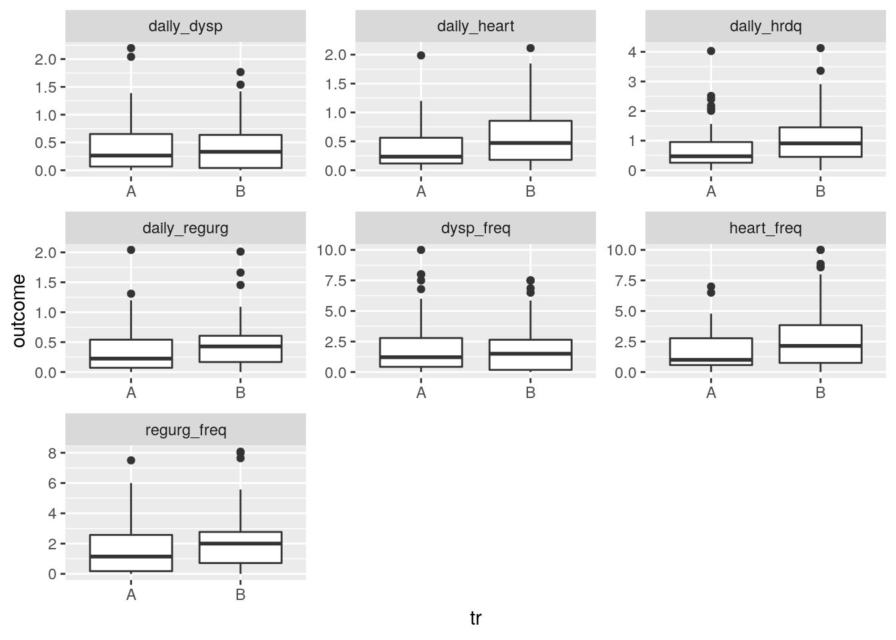
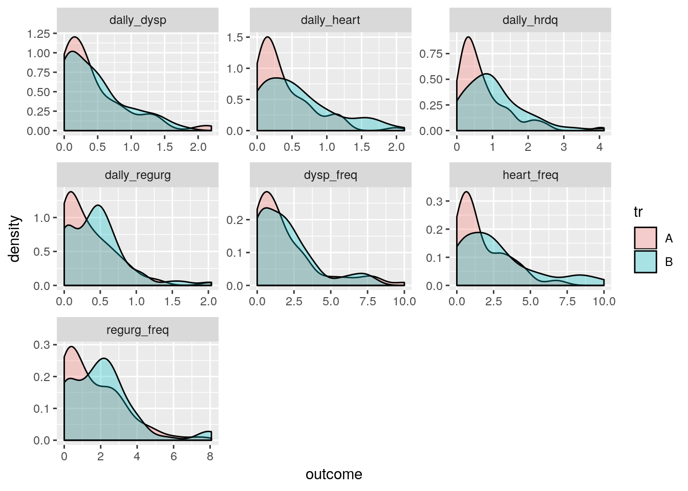
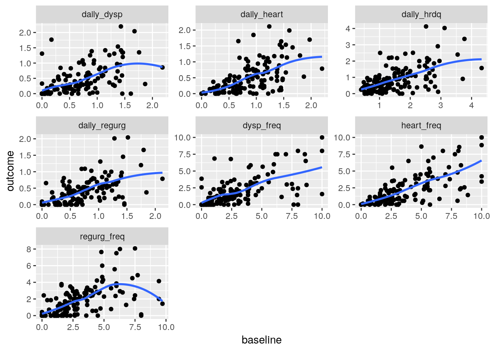

A tale of zero kitties
Introduction
I was reading this by Sara Stoudt and Kellie Ottoboni, and, looking at Kellie’s analysis, I wondered “how would I do it”, realizing that there are many ways to do things in the Tidyverse world. Kellie was kind enough to share her data, so I could go right ahead and experiment.
Let’s load the tidyverse and read in the data: I used “read_csv” from “readr” which avoids having to do the “stringsAsFactors” thing.
library(tidyverse)## ── Attaching packages ────────────────────────────────────────────────────────────────────────────────────── tidyverse 1.2.1 ──## ✔ ggplot2 3.0.0 ✔ purrr 0.2.5
## ✔ tibble 1.4.2 ✔ dplyr 0.7.6
## ✔ tidyr 0.8.1 ✔ stringr 1.3.1
## ✔ readr 1.1.1 ✔ forcats 0.3.0## ── Conflicts ───────────────────────────────────────────────────────────────────────────────────────── tidyverse_conflicts() ──
## ✖ dplyr::filter() masks stats::filter()
## ✖ dplyr::lag() masks stats::lag()my_url="https://raw.githubusercontent.com/kellieotto/ancova-permutations/master/data/clinical_cleaned.csv"
(clinical=read_csv(my_url))## Parsed with column specification:
## cols(
## SUBJID = col_integer(),
## SITEID = col_integer(),
## VISITNUM = col_integer(),
## tr = col_character(),
## country = col_integer(),
## heart_sev = col_double(),
## regurg_sev = col_double(),
## dysp_sev = col_double(),
## heart_freq = col_double(),
## regurg_freq = col_double(),
## dysp_freq = col_double(),
## daily_heart = col_double(),
## daily_regurg = col_double(),
## daily_hrdq = col_double(),
## daily_dysp = col_double()
## )## # A tibble: 272 x 15
## SUBJID SITEID VISITNUM tr country heart_sev regurg_sev dysp_sev
## <int> <int> <int> <chr> <int> <dbl> <dbl> <dbl>
## 1 1 1 1 A 1 1.43 1.43 1.57
## 2 1 1 2 A 1 1.43 1.29 2.14
## 3 2 1 1 B 1 2.71 2.57 2
## 4 2 1 2 B 1 2.29 2.29 1.86
## 5 3 1 1 A 1 2 1.86 1.71
## 6 3 1 2 A 1 1.86 1.29 1.14
## 7 4 1 1 B 1 2 0.286 0
## 8 4 1 2 B 1 2 0 0
## 9 5 1 1 A 1 2 2.43 2.14
## 10 5 1 2 A 1 2 2 2
## # ... with 262 more rows, and 7 more variables: heart_freq <dbl>,
## # regurg_freq <dbl>, dysp_freq <dbl>, daily_heart <dbl>,
## # daily_regurg <dbl>, daily_hrdq <dbl>, daily_dysp <dbl>272 measurements on 15 variables.
Preliminary processing and looking ahead
We only want some of those columns, namely the first four, and the outcome variables that begin with daily or that end with freq (we don’t want those sev variables that you probably see above). Also, each subject was measured at two time points, and we want to have a column for each of those, so that each subject is on only one line. (This last is the opposite of the usual situation where you have multiple response variables at different times for the same person and you want to have them one per row.)
This means that we have to do a select and a spread, for each of our seven outcome variables. For heart-sev, for example, it would look like this:
clinical %>%
select(VISITNUM, SUBJID, tr, SITEID, heart_sev) %>%
spread(VISITNUM, heart_sev) ## # A tibble: 136 x 5
## SUBJID tr SITEID `1` `2`
## <int> <chr> <int> <dbl> <dbl>
## 1 1 A 1 1.43 1.43
## 2 2 B 1 2.71 2.29
## 3 3 A 1 2 1.86
## 4 4 B 1 2 2
## 5 5 A 1 2 2
## 6 6 B 1 1.71 1.43
## 7 7 B 1 0.857 0.143
## 8 8 A 1 2.43 2.86
## 9 9 A 1 2.43 1
## 10 10 B 1 1.29 0.571
## # ... with 126 more rowsWhat has happened is that the values in VISITNUM have been used as column names for the new columns. This isn’t very meaningful , so we’ll call them “baseline” and “outcome” instead:
clinical %>%
select(VISITNUM, SUBJID, tr, SITEID, heart_sev) %>%
spread(VISITNUM, heart_sev) %>%
rename("baseline"=`1`, "outcome"=`2`)## # A tibble: 136 x 5
## SUBJID tr SITEID baseline outcome
## <int> <chr> <int> <dbl> <dbl>
## 1 1 A 1 1.43 1.43
## 2 2 B 1 2.71 2.29
## 3 3 A 1 2 1.86
## 4 4 B 1 2 2
## 5 5 A 1 2 2
## 6 6 B 1 1.71 1.43
## 7 7 B 1 0.857 0.143
## 8 8 A 1 2.43 2.86
## 9 9 A 1 2.43 1
## 10 10 B 1 1.29 0.571
## # ... with 126 more rowsI always get rename confused: it turns out to be “new name equals old name”.
Except that we want to use all the outcome variables at once.
This is where some forward thinking is called for. In due course we want to make a graph of outcome, or outcome against baseline, for each of the outcome variables. The slick way to do this is via facet_wrap, which means that we need to have all the outcome variables in one column, and a second column with the names of the outcome variables, which will be used to label the facets. This is gather, which we do first, because it makes everything else easier. Well, not quite first: first we have to grab the outcome variables we want:
clinical %>%
select(1:4,starts_with("daily"),ends_with("freq")) %>%
gather(xname,x,-(1:4))## # A tibble: 1,904 x 6
## SUBJID SITEID VISITNUM tr xname x
## <int> <int> <int> <chr> <chr> <dbl>
## 1 1 1 1 A daily_heart 0.8
## 2 1 1 2 A daily_heart 0.783
## 3 2 1 1 B daily_heart 1.97
## 4 2 1 2 B daily_heart 1.70
## 5 3 1 1 A daily_heart 1.24
## 6 3 1 2 A daily_heart 1
## 7 4 1 1 B daily_heart 1.54
## 8 4 1 2 B daily_heart 1.54
## 9 5 1 1 A daily_heart 1.21
## 10 5 1 2 A daily_heart 1.11
## # ... with 1,894 more rowsx is the value of the variable whose name is in xname.
Now we can do our spread to get baseline and outcome in separate columns:
(clinical %>%
select(1:4,starts_with("daily"),ends_with("freq")) %>%
gather(xname,x,-(1:4)) %>%
spread(VISITNUM,x) %>%
rename("baseline"=`1`, "outcome"=`2`) -> clinical_long)## # A tibble: 952 x 6
## SUBJID SITEID tr xname baseline outcome
## <int> <int> <chr> <chr> <dbl> <dbl>
## 1 1 1 A daily_dysp 0.9 1.39
## 2 1 1 A daily_heart 0.8 0.783
## 3 1 1 A daily_hrdq 1.61 1.45
## 4 1 1 A daily_regurg 0.815 0.669
## 5 1 1 A dysp_freq 3.93 5.57
## 6 1 1 A heart_freq 3.64 3.64
## 7 1 1 A regurg_freq 4.29 3.43
## 8 2 1 B daily_dysp 1.22 1.26
## 9 2 1 B daily_heart 1.97 1.70
## 10 2 1 B daily_hrdq 3.77 3.36
## # ... with 942 more rowsThe value of doing the gather first is that this gets all the outcome variables divided up into “baseline” and “outcome”, all at once, without needing a loop or map.
Making some plots
Now we can assess the effect of treatment tr on each of our outcome variables. In the blog post, Kellie plotted outcome value against treatment (for each outcome variable). I tell my students to look at the types of variables being plotted: outcome is quantitative and treatment is categorical, which (according to the chart in my lecture notes) means boxplots:
ggplot(clinical_long,aes(x=tr, y=outcome))+
geom_boxplot()+
facet_wrap(~xname,scales="free")
The facetting idea is to pretend that you were plotting outcome variable against treatment for all the data combined, and at the end, say that you want it done separately for each variable named in xname. When you have very disparate \(x\)-variables combined into one column, the scales for all the facets will be different, so it is usually best to allow ggplot to choose them independently.
All the distributions are right-skewed, and the upper-end outliers make it difficult to compare the distributions (you have to look at the medians crushed into the bottom of the plots and compare those). Kellie had a better idea, which was to make a density plot of each distribution for each treatment, and overlay the ones for the different treatments:
ggplot(clinical_long, aes(x=outcome, fill=tr))+
geom_density(alpha=0.3)+
facet_wrap(~xname, scales="free")
I chose a smaller alpha than Kellie did, to make the front graph more transparent. The story here, clearer than on the boxplots, is that treatment A is more likely to produce a smaller value than treatment B is (treatment B is a bit more likely to produce any value except for the very small ones.)
The reason for measuring the subjects at two time points was to see if the second one depended on the first one (which we
called baseline above). This uses the same kind of idea to make scatterplots for each outcome variable:
ggplot(clinical_long, aes(x=baseline, y=outcome))+
geom_point()+geom_smooth(se=F)+
facet_wrap(~xname, scales="free")## `geom_smooth()` using method = 'loess' and formula 'y ~ x'
I put a smooth trend on each plot.
It looks as if there is an upward trend on all of these that would be pretty well described by a line. That is, a larger baseline tends to go with a larger outcome, for all seven variables.
Doing those regressions in one swoop
Can we do each of those seven regressions, and get out the intercepts and slopes? This is what our “long” data frame looked like:
clinical_long## # A tibble: 952 x 6
## SUBJID SITEID tr xname baseline outcome
## <int> <int> <chr> <chr> <dbl> <dbl>
## 1 1 1 A daily_dysp 0.9 1.39
## 2 1 1 A daily_heart 0.8 0.783
## 3 1 1 A daily_hrdq 1.61 1.45
## 4 1 1 A daily_regurg 0.815 0.669
## 5 1 1 A dysp_freq 3.93 5.57
## 6 1 1 A heart_freq 3.64 3.64
## 7 1 1 A regurg_freq 4.29 3.43
## 8 2 1 B daily_dysp 1.22 1.26
## 9 2 1 B daily_heart 1.97 1.70
## 10 2 1 B daily_hrdq 3.77 3.36
## # ... with 942 more rowsWhen you’re doing something for each of several subsets of a data frame, the nest and “list-column” ideas come into play. Let’s look at nest first. If you nest everything except the facetting variable, you get this:
clinical_long %>% nest(-xname)## # A tibble: 7 x 2
## xname data
## <chr> <list>
## 1 daily_dysp <tibble [136 × 5]>
## 2 daily_heart <tibble [136 × 5]>
## 3 daily_hrdq <tibble [136 × 5]>
## 4 daily_regurg <tibble [136 × 5]>
## 5 dysp_freq <tibble [136 × 5]>
## 6 heart_freq <tibble [136 × 5]>
## 7 regurg_freq <tibble [136 × 5]>These are our seven outcome variables, and the data column contains all the rest of the data, including columns called outcome and baseline. So for each of those \(136 \times 5\) data frames, we want to do a regression of outcome on baseline. Here, finally, we get to use something from purrr (which now means that my clever title doesn’t work any more, boo hoo):
clinical_long %>% nest(-xname) %>%
mutate(reg=map(data,~lm(outcome~baseline, data=.)))## # A tibble: 7 x 3
## xname data reg
## <chr> <list> <list>
## 1 daily_dysp <tibble [136 × 5]> <S3: lm>
## 2 daily_heart <tibble [136 × 5]> <S3: lm>
## 3 daily_hrdq <tibble [136 × 5]> <S3: lm>
## 4 daily_regurg <tibble [136 × 5]> <S3: lm>
## 5 dysp_freq <tibble [136 × 5]> <S3: lm>
## 6 heart_freq <tibble [136 × 5]> <S3: lm>
## 7 regurg_freq <tibble [136 × 5]> <S3: lm>The column reg now contains all the output from each regression, including coefficients, R-squared, F-test and all. From each of those regressions we can use coef to extract the intercept and slopes:
clinical_long %>% nest(-xname) %>%
mutate(reg=map(data,~lm(outcome~baseline, data=.))) %>%
mutate(coeffs=map(reg,~coef(.)))## # A tibble: 7 x 4
## xname data reg coeffs
## <chr> <list> <list> <list>
## 1 daily_dysp <tibble [136 × 5]> <S3: lm> <dbl [2]>
## 2 daily_heart <tibble [136 × 5]> <S3: lm> <dbl [2]>
## 3 daily_hrdq <tibble [136 × 5]> <S3: lm> <dbl [2]>
## 4 daily_regurg <tibble [136 × 5]> <S3: lm> <dbl [2]>
## 5 dysp_freq <tibble [136 × 5]> <S3: lm> <dbl [2]>
## 6 heart_freq <tibble [136 × 5]> <S3: lm> <dbl [2]>
## 7 regurg_freq <tibble [136 × 5]> <S3: lm> <dbl [2]>and now we extract those two things for each regression:
clinical_long %>% nest(-xname) %>%
mutate(reg=map(data,~lm(outcome~baseline, data=.))) %>%
mutate(coeffs=map(reg,~coef(.))) %>%
mutate(intcpt=map_dbl(coeffs,~pluck(.,1)),
slope=map_dbl(coeffs,~pluck(.,2)))## # A tibble: 7 x 6
## xname data reg coeffs intcpt slope
## <chr> <list> <list> <list> <dbl> <dbl>
## 1 daily_dysp <tibble [136 × 5]> <S3: lm> <dbl [2]> 0.0848 0.549
## 2 daily_heart <tibble [136 × 5]> <S3: lm> <dbl [2]> -0.0440 0.632
## 3 daily_hrdq <tibble [136 × 5]> <S3: lm> <dbl [2]> 0.0229 0.564
## 4 daily_regurg <tibble [136 × 5]> <S3: lm> <dbl [2]> 0.0343 0.529
## 5 dysp_freq <tibble [136 × 5]> <S3: lm> <dbl [2]> 0.391 0.537
## 6 heart_freq <tibble [136 × 5]> <S3: lm> <dbl [2]> -0.137 0.640
## 7 regurg_freq <tibble [136 × 5]> <S3: lm> <dbl [2]> 0.505 0.433